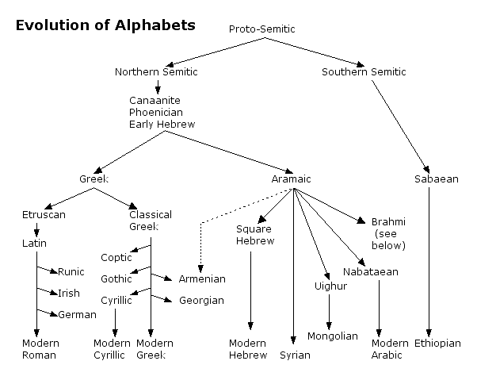
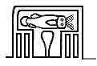
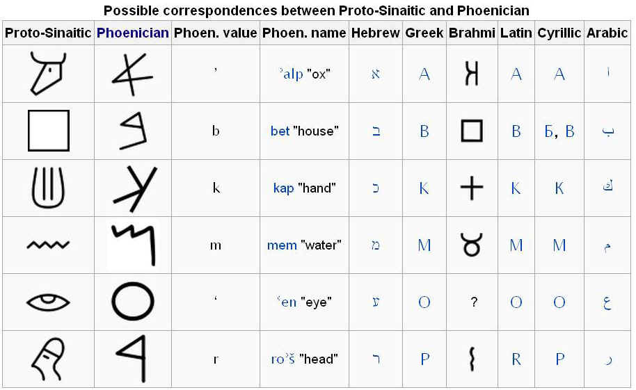
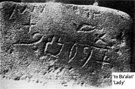
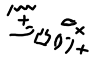

The Phonetic Alphabet

How and when phonograms evolved from pictographic vocabularies is unknown, but it is obvious that they enlarged the functionality of language. Perhaps they fulfilled the need to mimic the sound of a new word for which there was no handy ideogram or logogram, for example the name of a king (see below). Unable to create a distinctive picture of the king, Egyptian scribes cannibalized available pictograms to improvise a phonetic shorthand, one that deployed sounds rather than symbols to denote an object or thing.
Early written languages, Hieroglyphs and Sumerian Cuneiform, were the province of priest and sovereign. They evolved in stone and clay, were complex, and had an aura of esoteric mystery. When Hieroglyphs were finally adopted by the proletariat in their hieratic and demotic (i.e. cursive) forms, from about 600 BCE onward, they still retained much or their original complexity. This complexity is undoubtedly why they fell into disuse by 300 CE. Indeed, until the discovery of the Rosetta Stone in 1799 by a French soldier, Hieroglyphs were unintelligible to Egyptians and Egyptologists alike.
What baffled linguists for centuries was the fact that rather than expressing allegorical meaning, most hieroglyphs were phonetic: Egyptian hieroglyphic script had 24 consonants, but each was 'overdetermined,' i.e. represented my multiple phonograms:
In Egyptian hieroglyphics we have a supreme example of what is now called redundancy in languages and code; one of the difficulties in deciphering the Rosetta stone lay in the fact that a polysyllabic word might give each syllable not one symbol but a number of different ones in common use, in order that the word should be thoroughly understood. —Colin Cherry (from a quotation in The Gutenberg Galaxy)
It was as if Egyptian scribes were unsure of the universality of phonetic technology and thought it necessary to provide enough phonograms to guarantee understanding for as many readers as possible. A simple example of Egyptian phonetics is found in the symbol for 'Narmer,' a king thought to have ruled Egypt about 3000 BCE:
 |
Narmer |
The pictogram of the catfish /n`r/ on top and a chisel /mr/ on the bottom give us n`r + mr, or "Narmer" (exact vocalization of vowels is uncertain).
The Egyptian scribes never transformed their unwieldy and complicated writing system into a true alphabet. Hieroglyphic characters—there were about 2000—could represent either the sound of an object (a phonogram) or the idea associated with the object (a logogram). Jean-Francois Champollion, the Egyptologist who deciphered the Rosetta Stone in 1822, said: "It is a complex system, writing figurative, symbolic, and phonetic all at once, in the same text, the same phrase, I would almost say in the same word."
To the enterprising Phoenician traders who dominated commerce throughout the Mediterranean world between 1550 BCE and 300 CE, the virtues of alphabetical writing would have been obvious, and to them the ease and efficiency of a system that mapped the sounds of their Semitic language to a handful of familiar phonograms must have been irresistible. For example, the Proto-Sinaic alphabet used the image of an oxen's head to represent a glottal phoneme now found in contemporary Arabic.

| The earliest record of the Phoenician alphabet: it is speculated that this stone inscription, found in Serabit el-Khadim in the southwest Sinai peninsula, means ba`lat (Lady). | |
 |
 |
But, McLuhan explains, Colin Cherry's emphasis of redundancy is beside the point:
It is not the avoidance of redundancy that is the key to the phonetic alphabet and its effects on person and society. "Redundancy" is a "content" concept, itself a legacy of alphabetic technology. That is, any phonetic writing is a visual code for speech. Speech is the "content" of phonetic writing. But it is not the content of any other kind of writing. Pictographic and ideographic varieties of writing are Gestalts or snapshots of various situations, personal or social. In fact, we can get a good idea of non-alphabetic forms of writing from modern mathematical equations like E = MC2 or from the ancient Greek and Roman "figures of rhetoric." Such equations or figures have no content but are structures like an individual melody which evoke their own world. The figures of rhetoric are postures of the mind, as hyperbole, or irony, or litotes, or simile, or paranomasia. Picture writing of all kinds is a ballet of such postures which delights our modern bias towards synesthesia and audile-tactile richness of experience, far more than does the bare, abstract alphabetic form. It would be well today if children were taught a good many Chinese ideograms and Egyptian hieroglyphs as a means of enhancing their appreciation of our alphabet.
Colin Cherry, then, misses the point about the unique character of our alphabet, namely that it dissociates or abstracts, not only sight and sound, but separates all meaning from the sound of the letters, save so far as the meaningless letters relate to the meaningless sounds. So long as any other meaning is vested in sight or sound, the divorce between the visual and the other senses remains incomplete, as is the case in all forms of writing save the phonetic alphabet. (p. 61, The Gutenberg Galaxy)